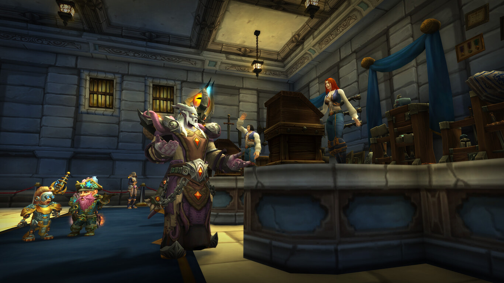

Sylvanas Windrunner Desaparece Tras el Juicio en Oribos
Por: Chromie, Guardián del Tiempo
Fecha: 27 de Noviembre, 2024
La ex-Jefa de Guerra de la Horda ha desaparecido misteriosamente tras su polémico juicio en Oribos. Los testigos informan haberla visto por última vez en compañía de Tyrande Whisperwind, aunque la líder de los Elfos de la Noche niega cualquier participación en su desaparición.
"La situación es más compleja de lo que parece", declaró Thrall, ex-Jefe de Guerra, quien sirvió como testigo durante el juicio. "El equilibrio entre la justicia y la redención es delicado, especialmente considerando los eventos recientes en las Shadowlands."
Los Kyrian han iniciado una búsqueda exhaustiva en todos los reinos de las Shadowlands, mientras que los agentes del SI:7 investigan posibles avistamientos en Azeroth.
El Consejo de Stormwind Debate sobre la Embajada Forsaken

La propuesta de establecer una misión diplomática Forsaken en la ciudad ha provocado acalorados debates entre el liderazgo de la Alianza. El Alto Rey Anduin Wrynn apoya la iniciativa como un paso hacia la paz duradera.
Thunder Bluff Organiza Cumbre de Paz Histórica

Representantes de todas las órdenes druídicas se reunieron en Thunder Bluff para el primer Consejo Cenarion Unido, abordando preocupaciones ambientales tanto en Azeroth como en las Shadowlands.
El Cartel Goblin Abre Ruta Comercial Oribos-Orgrimmar
El Cartel Bilgewater ha establecido una ruta comercial revolucionaria que conecta la capital de la Horda con las Shadowlands. Los precios de los materiales exóticos han caído un 40%.
La Reforma de la Casa de Subastas Causa Caos en el Mercado

Los cambios recientes en las políticas de la casa de subastas entre facciones han llevado a fluctuaciones sin precedentes en el mercado. Los comerciantes goblin informan de beneficios récord mientras los mercados tradicionales basados en facciones luchan por adaptarse.